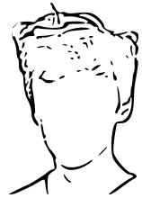

samuel kunst
 should you want a more detailed resume you can either contact me here or use any of the links belowexperience
- 08.19-10.19 ― philip morris internaitonal, digital experience and design internship
- 03.17-12.17 ― schlosscafé im palmenhaus, waiter / general service
- 07.17-08.17 ― elgato systems, analysis of gaming trends and online presence in livestreaming services
- 06.17-07.17 ― appasionata park munich, stage lighting and sound design through digital simulations and sequencing
education
- 2019-current ― hasso plattner institute, it-systems engineering
- 2014-2019 ― bavarian internaitonal school, ib diploma
- 2012-2014 ― shore country day school
- 2007-2012 ― bavarian international school
- 2003-2006 ― kindergarten, swampscott, usa